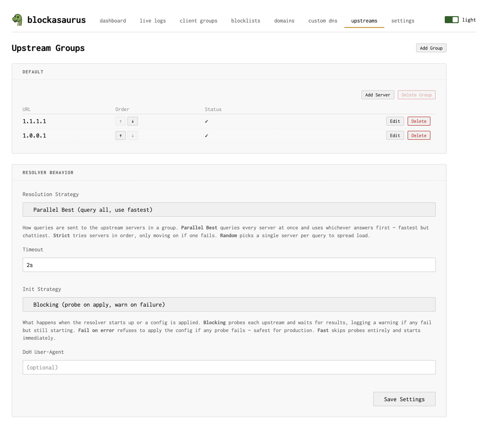
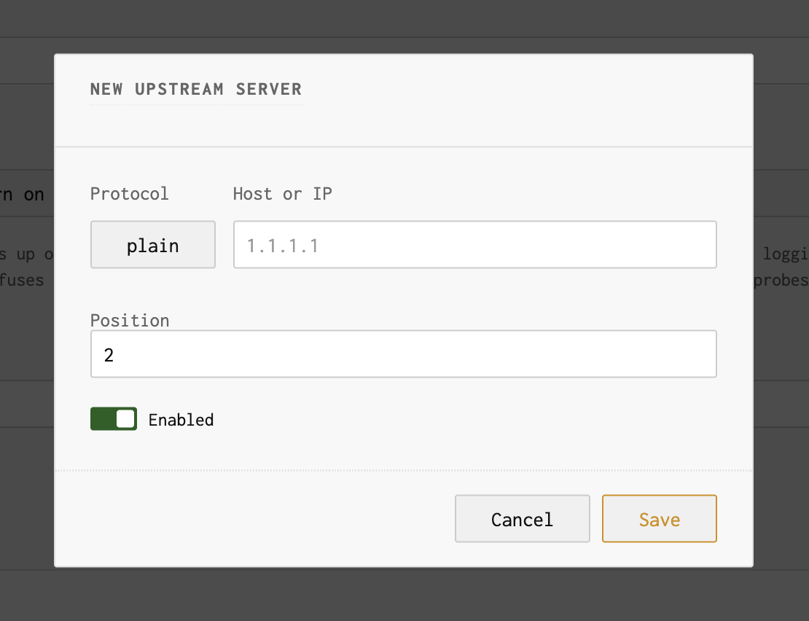
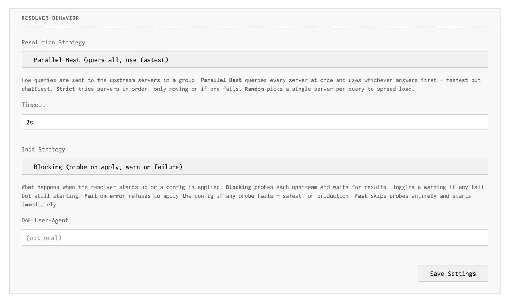

Upstream DNS
Configure where blockasaurus forwards DNS queries
When blockasaurus receives a DNS query that isn’t blocked or served from cache, it forwards the query to one or more upstream DNS servers. Upstreams are organized into groups and managed entirely through the web UI.
On first start, blockasaurus creates a default upstream
group with Cloudflare DNS (1.1.1.1 and 1.0.0.1).
The Upstreams Page
Navigate to the Upstreams tab in the web UI to manage upstream servers and resolver settings.

Upstream Groups
Upstream servers are organized into named groups. The default
group is always present and cannot be deleted. You can create additional
groups if you want different resolvers for different use cases.
Each group contains one or more DNS servers. Within a group, the resolution strategy determines how servers are queried.
Adding Upstream Servers
Click “Add Server” on a group to add a new upstream. The add/edit dialog lets you configure the protocol and address:

Supported Protocols
| Protocol | URL Format | Example |
|---|---|---|
| Plain DNS (UDP/TCP) | IP[:port] |
1.1.1.1 or 9.9.9.9:53 |
| DNS-over-TLS | tcp-tls:host:port |
tcp-tls:dns.google:853 |
| DNS-over-HTTPS | https://host/path |
https://dns.google/dns-query |
If you paste a full URL (e.g., https://cloudflare-dns.com/dns-query)
into the host field, the UI auto-detects the protocol and splits the
address for you.
Server Order
Each server in a group has a position number. Use the up/down arrows to reorder servers. Position matters most when using the Strict resolution strategy (see below).
Resolver Settings
Below the upstream groups, the Upstream Settings section controls global resolver behavior:

Resolution Strategy
| Strategy | Behavior | Best For |
|---|---|---|
| Parallel Best | Queries all servers simultaneously, returns the fastest response | Lowest latency. Default choice. |
| Strict | Tries servers in position order; uses next only on failure | When you have a preferred server with a fallback |
| Random | Picks one random server per query | Even load distribution across servers |
Timeout
How long to wait for an upstream response before failing. Format is a
Go duration string: 2s, 500ms, 1s.
Default is 2s.
Init Strategy
Controls what happens when blockasaurus starts or configuration is applied:
| Strategy | Behavior |
|---|---|
| Blocking | Probes each upstream on startup; warns on failure but still starts. Default |
| Fail on error | Rejects config apply if any upstream probe fails. Safest for production. |
| Fast | Skips probes entirely, starts immediately. |
DoH User-Agent
Optional custom User-Agent header sent with DNS-over-HTTPS
requests. Leave empty to use the default.
Common Upstream Configurations
| Provider | Plain | DoT | DoH |
|---|---|---|---|
| Cloudflare | 1.1.1.1 |
tcp-tls:one.one.one.one:853 |
https://cloudflare-dns.com/dns-query |
8.8.8.8 |
tcp-tls:dns.google:853 |
https://dns.google/dns-query |
|
| Quad9 | 9.9.9.9 |
tcp-tls:dns.quad9.net:853 |
https://dns.quad9.net/dns-query |
| Mullvad | — | tcp-tls:dns.mullvad.net:853 |
https://dns.mullvad.net/dns-query |
Applying Changes
After modifying upstreams, click the Apply button in the header. Blockasaurus will probe the new upstream servers according to the init strategy before putting the new configuration into effect.
If you use Fail on error init strategy and an upstream is unreachable, the configuration apply will be rejected. Make sure your upstreams are reachable before applying.